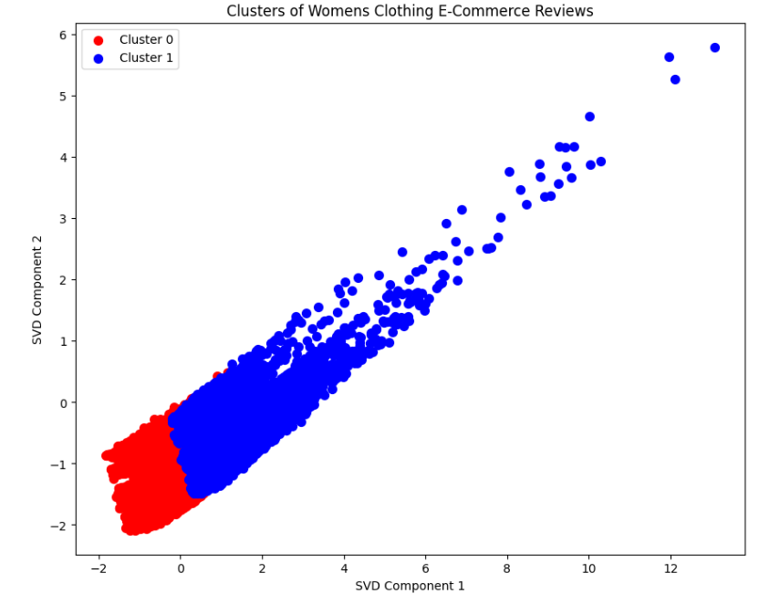

Developing an Enhanced Recommendation System for Women's Clothing in E-Commerce: A Comparative Analysis of Traditional Machine Learning and Deep Learning Approaches
Authors: Rezky Agung, Fairuuz Nurdiaz Amaanullah
Introduction
Customer reviews play an important role in the e-commerce sector. These reviews serve as an important tool for understanding customer sentiment. These reviews provide valuable insights into consumer preferences, experiences, and satisfaction levels, thereby enabling e-commerce businesses to make informed decisions. By analyzing customer feedback, companies can identify trends, improve product offerings, and improve the overall shopping experience [1]. This not only helps build a loyal customer base but also drives business growth and competitiveness in a crowded market. Therefore, leveraging customer reviews is crucial for women's clothing e-commerce platforms that aim to stay in tune with their customers' needs and preferences.
However, customer reviews have problems that need to be addressed, such as a variety of different feature types, namely text, categorical, and numeric. A lot of data is missing, such as the text in the review title where the solution must use adjective extraction to get a better meaning [2]. In the feature selection process, there are 10 important features, including: Title, Review Text, Rating, Recommended IND, etc [3]. Selecting the Recommended IND feature as a label is important because it shows whether customers recommend the product, which is a key indicator of customer satisfaction. Using the Rating feature is also very important because it provides direct information regarding customer assessments of products, which helps in analyzing sentiment in review text and title text to decide on business policies.
The problem of data imbalance in customer review datasets requires special handling to ensure that the machine learning model being built is not biased. This imbalance can cause the model to be more likely to predict the majority class, ignoring the minority class which is also important [4]. To balance the dataset, methods such as K-Means or Synthetic Minority Over-sampling Technique (SMOTE) can be used [5]. K-Means can help with clustering and then re-sampling to balance the classes, while SMOTE works by synthesizing new samples from the minority class to increase the number until it is more balanced with the majority class [6]. These two techniques help create a more balanced dataset, ultimately improving the model's performance and accuracy in predicting outcomes in both classes.
The recommendation flow starts with a simple Logistic Regression[7] with TF and TF-IDF [8] feature extraction, also the other comparing text representation using GloVe embeddings [9], to ensure fixed length on features some approaches are used i.e. mean, median, max, midpoint, and absolute max pooling. After that, the best pooling is combined with TF-IDF to see whether the performance gets better or not. But ML models still fail to capture complex patterns in textual data. Convolutional neural networks (CNNs) [10] excel at recognizing local patterns, Recurrent neural networks (RNN) [11] are good for processing sequential data, while Long short-term memory [12] is able to handle long-term dependencies in text. The combination of CNN-LSTM with GloVe Embedding provides rich word representation and deep contextual understanding, resulting in highly accurate and reliable predictions.
Methods and Experiments
Datasets Analysis
The Datasets
The dataset utilized for this analysis is the Women's Clothing E-Commerce Reviews. It comprises reviews authored by genuine customers and has undergone anonymization. Table 1 displays the distribution of features and the label (Recommended IND) within the dataset.
| Feature | Unique Count |
|---|---|
| Clothing ID | 1172 |
| Age | 77 |
| Review Text | 22621 |
| Rating | 5 |
| Recommended IND | 2 |
| Positive Feedback Count | 82 |
| Division Name | 3 |
| Department Name | 6 |
| Class Name | 20 |
Statistical Descriptive on Numerical Features
| Feature | Mean | Std. Deviation | Coef. Variance | Type |
|---|---|---|---|---|
| Age | 42.282 | 12.328 | 29.156% | Integer |
| Rating | 4.183 | 1.115 | 26.655% | Categorical |
| Recommended IND | 0.818 | 0.385 | 47.066% | Categorical |
| Positive Feedback | 2.631 | 5.787 | 219.955% | Integer |
It appears that our label distribution is unbalanced. With a mean of 0.818, it's evident that the majority of instances are labeled as 1. Additionally, positive feedback is concentrated within certain values, suggesting that relying on these features may not be advisable moving forward.
Preprocessing Data
-
Missing Value Handling
To handle missing values, we first perform punctuation removal and lowercasing on each data entry. For blank review texts, we drop the entries since our main feature is text features, and we observed that if the review text is blank, the title is also usually blank, so these entries are removed. Additionally, information on product division, department, and class name is dropped. For other missing value titles, we fill them by extracting only the adjectives from the review text. The example is:
Review Text Title (After Extract Adjective) Absolutely wonderful - silky and sexy and comfortable wonderful sexy comfortable - Punctuation removal and lowercasing
-
Feature Selection
Rating and Recommended IND exhibit a high correlation score, while the remaining features display low positive or negative correlations. Hence, solely Rating and Recommended IND suffice as features. Furthermore, age is excluded as it bears no significant impact on the dataset. In scenarios where there's a missing title, adjective extraction is applied to extract adjectives from the Review Text, thus filling the gap.
- SMOTE and KNN Clustering
Features Engineering
Text data is unstructured text also, it’s more not straight forward as usual on tabular data, where it can directly fed into model, hence choosing some proper techniques are necessary to ensure better performance on our model. Feature engineering plays a pivotal role in transforming raw text into structured numerical representations that machine learning algorithms can effectively analyze. Techniques such as tokenization, vectorization, and embedding are employed to extract meaningful features from text, enabling tasks such as sentiment analysis, classification, clustering, and information retrieval. Employ a variety of techniques to transform raw textual information into structured features, enabling effective machine learning model training and inference.
Features Extraction
- Bag-Of-Words Representation
BOW is a corpus text representation where using word as features and also each document will represent by a vector. The BoW model represents text as a collection of words and their frequency in a given document or corpus. It does not consider the order or context in which the words appear, and therefore, it may not capture the full meaning of the text. The BoW model is simple and easy to implement, but it has limitations in capturing the meaning of language.
-
Term Frequency (TF)
Measures how frequently a term appears in a document
\[TF(t,d) = \dfrac{number\, of\, times\, t\, appears\, in \,d}{total\,number\, of \,terms\, in \,d}\] -
Term Frequency - Index Document Frequency (TF-IDF)
Weighs a term's frequency in a document against its frequency across all documents, highlighting important terms unique to each document.
\[TF-IDF(t,d) = TF(t,d) * IDF(t) \qquad IDF(t) = \log\dfrac{N}{1+df}\]
to prevent the curse of dimensionality where weird words, typo words on corpus, then for the features are setted to be appears for each words appears 10 times.
count_vect = CountVectorizer(min_df = 10) tfidf_vect = TfidfVectorizer(min_df = 10) -
Term Frequency (TF)
-
Global Vectors for Words Representation
GloVe (Global Vectors for Word Representation) is an unsupervised learning algorithm for generating word embeddings by aggregating global word-word co-occurrence statistics from a corpus. The Core Idea is this methods using Matrix Factorization to construct co-occurence matrix \(X\), where \(X_{ij}\) denotes how often word \(j\) appears in the context of word \(i\). Then this matrix is factorized into word vectors \(W\) and context vectors \(C\) such their dot product approximates the logarithms of the co-occurence probabilities \(X_{ij} \approx exp(W_i^TC_i)\). GloVe provides an effective way to learn dense vector representations of words from large text corpora, capturing semantic similarities and relationships between words.
Re-balancing Using SMOTE and K Means
Our analysis has detected some common problems about unbalanced labels. Unbalanced labels can lead to major issues where the model cannot learn on minority pattern data. To address this problem, we use the Synthetic Minority Oversampling Technique (SMOTE) and K-Means to deal with this data. As a result, the problem is solved with an increase in the F1-Score on Zero class predictions.
-
Synthetic Minority Over-sampling Technique
SMOTE is a method used to address class imbalance in machine learning datasets by generating synthetic samples for the minority class. It works by creating new instances of minority class samples by interpolating between existing minority class instances, thus helping to balance the class distribution and improve the performance of classifiers, especially in scenarios where the minority class is underrepresented.[Chawla et al., 2002]
The Equation for generating a synthetic sample can be represented as:
The visualization of SMOTE is given by:
SMOTE Generating Data Visualization (a) Without SMOTE(b) With SMOTEAs we can see, SMOTE successfully increases performance for zero classes; hence, we will use SMOTE for all results.
-
K-Means Clustering
K-Means Clustering [Bradley et al., 2000] is an Unsupervised Machine Learning algorithm that groups unlabeled datasets into different clusters to explore the fundamentals and workings of K-Means clustering along with the implementation. Let there be a set of
d-dimensional data
. It is assumed that there are
(must be
) clusters
. K-means clustering hopes to minimize the sum of squares of the errors between the data within the cluster and the cluster center. The mathematical formula is as follows:
The visualization of data without K-Means and with K-Means:
(a) Without K-Means(b) With K-MeansFigure (a) shows unbalanced reviews of clustering women's clothing e-commerce reviews, while Figure (b) shows the results of clustering women's clothing e-commerce reviews using offset K-Means. Figure (b) shows that with K-Means, data can be balanced so that the analysis and model applied are more accurate and fair. Figure (a) shows the risk of bias from original data that is not balanced so that it cannot predict more accurately, as evidenced by the recommendation prediction results as follows:
 (a) Without K-Means
(a) Without K-Means (b) With K-Means
(b) With K-Means
Pooling
In order to convert a bunch of vectors to tabular data, so it can train on fixed length features, the techniques can be easily achieved by only averaging in common ways, but to take other approaches we tried more ways like taking the median, midpoint, max, and absolute max pooling.
Given a sentence that every word of the sentence can be represented by vectors using GloVe, let be a vector of word
with dimension
.
-
Mean Pooling: This approach can be done by taking the average of the vectors with unfixed length sentence
- Median Pooling: This approach is taking the median of each feature. \[ \begin{bmatrix} a_{11} & a_{12} & \cdots & a_{1n} \\ a_{21} & a_{22} & \cdots & a_{2n} \\ \vdots & \vdots & \ddots & \vdots \\ a_{D1} & a_{D2} & \cdots & a_{Dn} \\ \end{bmatrix}_{D\times N} \xrightarrow{convert \,to} \begin{bmatrix} median(a_{1j}, \forall j\leq n )\\ median(a_{2j}, \forall j\leq n )\\ \vdots\\ median(a_{Dj}, \forall j\leq n ) \end{bmatrix} \]
- Max Pooling: This approach can be done by find the max value of each features in every vectors \[ \begin{bmatrix} a_{11} & a_{12} & \cdots & a_{1n} \\ a_{21} & a_{22} & \cdots & a_{2n} \\ \vdots & \vdots & \ddots & \vdots \\ a_{D1} & a_{D2} & \cdots & a_{Dn} \\ \end{bmatrix}_{D\times N} \xrightarrow{convert \,to} \begin{bmatrix} max(a_{1j}, \forall j\leq n )\\ max(a_{2j}, \forall j\leq n )\\ \vdots\\ max(a_{Dj}, \forall j\leq n ) \end{bmatrix} \]
- Midpoint Pooling: This approach can be done by find the max value of each features in every vectors \[ \begin{bmatrix} a_{11} & a_{12} & \cdots & a_{1n} \\ a_{21} & a_{22} & \cdots & a_{2n} \\ \vdots & \vdots & \ddots & \vdots \\ a_{D1} & a_{D2} & \cdots & a_{Dn} \\ \end{bmatrix}_{D\times N} \xrightarrow{convert \,to} \begin{bmatrix} max(a_{1j}) - min(a_{1j}), \forall j\leq n \\ max(a_{2j}) - min(a_{2j}), \forall j\leq n \\ \vdots\\ max(a_{Dj}) - min(a_{Dj}), \forall j\leq n \end{bmatrix} \]
- absolute Max Pooling: This approach done by absoluting all value on matrices then do max pooling \[ \begin{bmatrix} a_{11} & a_{12} & \cdots & a_{1n} \\ a_{21} & a_{22} & \cdots & a_{2n} \\ \vdots & \vdots & \ddots & \vdots \\ a_{D1} & a_{D2} & \cdots & a_{Dn} \\ \end{bmatrix}_{D\times N} \xrightarrow{convert \,to} \begin{bmatrix} max(abs(a_{1j}, \forall j\leq n ))\\ max(abs(a_{2j}, \forall j\leq n ))\\ \vdots\\ max(abs(a_{Dj}, \forall j\leq n )) \end{bmatrix} \]
Model Workflow
- Machine Learning with Logistic Regression Workflow
Machine Learning with Logistic Regression Workflow below is diagram of ML workflow of our process. Then the result will evaluate with metrics like accuracy, precision, recall, F1-Score, and loss in figure 1:
Machine Learning Workflow - Deep Learning CNN-LSTM workflow (proposed method)
Deep Learning with Neural Networks Workflow below is diagram of DL workflow of our process. Then the result will evaluate with metrics like accuracy, precision, recall, F1-Score, and loss in figure 2:
Deep Learning Workflow
Result and Analysis
-
Result of machine learning approach using logistic regression without rating features, from the table 1 some point that we can learn:
- The result wasn't overfitted evenly without regularization the difference accuracy only 1-3%, but not show here to save more space
- TF and TF-IDF alone also perform well, with TF achieving slightly better overall scores than TF-IDF in terms of Accuracy and F1-Score.
- GloVe 200D with mean pooling shows a good performance but falls short compared to the other approach.
- Mean pooling consistently outperforms other pooling methods (median, midpoint, and abs max pooling).
- Dimension Impact: Increasing the dimensionality of GloVe embeddings from 50D to 200D improves performance, as seen with GloVe 50D, 100D, and 200D. The higher-dimensional GloVe 200D with mean pooling performs better than lower-dimensional counterparts.
- Best Performance: The combination of GloVe 200D embeddings with TF and mean pooling achieves the highest overall performance across all metrics. It has the highest Accuracy (0.934), Precision (0.950), Recall (0.913), F1-Score (0.931), and the lowest Loss (0.1959). This indicates that combining TF features with GloVe embeddings and using mean pooling effectively leverages the strengths of both methods.
- Result of machine learning approach using logistic regression with rating features, from the table metrics_with_rating some point that can explain:
- Introducing rating features leads to an improvement in performance metrics across all text representations. Accuracy, precision, recall, and F1-scores are generally higher, and loss values are lower compared to the models without rating features.
- Interestingly, GloVe 50D with mean pooling shows a significant improvement when rating features are included, reaching an accuracy of 0.961 and an F1-score of 0.959. This suggests that even lower-dimensional embeddings can perform well when complemented with additional informative features like ratings.
- GloVe 200D + TF + mean pooling continues to be the best-performing combination, achieving the highest metrics with an accuracy of 0.967, precision of 0.979, recall of 0.952, F1-score of 0.965, and the lowest loss of 0.1136.
-
Result of Deep Learning Approach
The table presents the performance of various neural networks models using GloVe embedding in women's clothing e-commerce review analysis, with accuracy, precision, recall, F1-score, and loss metrics measured for each model. The models compared include GloVe CNN, GloVe RNN, GloVe LSTM, and a combination of GloVe CNN LSTM. Based on the table, the performance of the neural networks model with GloVe embedding shows very good results in analyzing women's clothing e-commerce reviews. The GloVe CNN model achieved accuracy, precision, recall, and F1-score of 0.9703 with a loss of 0.1658, showing consistent performance but with slightly higher loss than the other models. The GloVe RNN model improves the performance metrics slightly higher with a value of 0.9726 and a reduction in loss to 0.1397, while the GloVe LSTM model shows further improvement with a value of 0.9735 and a loss of 0.1298, indicating better ability in handling long-term dependencies in text data. Finally, the GloVe CNN LSTM model shows the best performance with all metrics of 0.9764 and the lowest loss of 0.0688, combining the strengths of CNN in capturing local features and LSTM in handling sequential context, thus providing the most accurate and efficient results.
Model Accuracy Precision Recall F1-Score Loss GloVe CNN 0.9703 0.9703 0.9703 0.9703 0.1658 GloVe RNN 0.9726 0.9726 0.9726 0.9726 0.1397 GloVe LSTM 0.9735 0.9735 0.9735 0.9735 0.1298 GloVe CNN LSTM 0.9764 0.9764 0.9764 0.9764 0.0688 Performance metrics for different models 

A visualization of learning curve Neural Networks model in : (a) Loss Curve (b) Accuration Curve
| Text Representation | Accuracy | Precision | Recall | F1-Score | Loss |
|---|---|---|---|---|---|
| TF | 0.928 | 0.927 | 0.926 | 0.926 | 0.2249 |
| TF-IDF | 0.925 | 0.940 | 0.903 | 0.921 | 0.2338 |
| GloVe 50D + mean pooling | 0.777 | 0.785 | 0.745 | 0.764 | 0.4631 |
| GloVe 100D + mean pooling | 0.821 | 0.830 | 0.794 | 0.812 | 0.4062 |
| GloVe 200D + mean pooling | 0.848 | 0.857 | 0.825 | 0.840 | 0.3668 |
| Glove 200D + median pooling | 0.827 | 0.832 | 0.806 | 0.819 | 0.3984 |
| GloVe 200D + midpoint pooling | 0.758 | 0.755 | 0.743 | 0.749 | 0.5005 |
| GloVe 200D + abs max pooling | 0.764 | 0.758 | 0.754 | 0.756 | 0.5029 |
| GloVe 200D + TF + mean pooling | 0.934 | 0.950 | 0.913 | 0.931 | 0.1959 |
| GloVe 200D + TF-IDF + mean pooling | 0.927 | 0.944 | 0.904 | 0.924 | 0.2288 |
| Text Representation | Accuracy | Precision | Recall | F1-Score | Loss |
|---|---|---|---|---|---|
| TF | 0.958 | 0.952 | 0.962 | 0.957 | 0.1272 |
| TF-IDF | 0.958 | 0.968 | 0.944 | 0.956 | 0.1297 |
| GloVe 50D + mean pooling | 0.961 | 0.979 | 0.939 | 0.959 | 0.1398 |
| GloVe 100D + mean pooling | 0.958 | 0.975 | 0.938 | 0.956 | 0.1397 |
| GloVe 200D + mean pooling | 0.958 | 0.972 | 0.940 | 0.956 | 0.1375 |
| GloVe 200D + TF + mean pooling | 0.967 | 0.979 | 0.952 | 0.965 | 0.1136 |
| GloVe 200D + TF-IDF + mean pooling | 0.958 | 0.967 | 0.947 | 0.957 | 0.0598 |
Conclusion
- Re-Balancing data is a must because model can't learn the minority classes pattern, it can be seen on the lack of precision and recall on zero classes before rebalanced, on this project we provide 2 approach, first the common method SMOTE used on logistic regression and KNN clustering on deep learning part. both of the method helps significantly enhances our performance model on zero classes.
- Of the 10 available features, the features that have the most influence in this prediction are the review text, title text and rating features which are useful for giving weight to review sentiment and title text. These features provide important insights into customer opinions and satisfaction levels. Analyzing sentiment in review text and headlines, as well as ratings, enables a nuanced understanding of customer feedback, which can significantly increase the predictive power of a model.
- On Machine Learning part especiall logistic regression, importance of combining features the combination of traditional text representation methods (TF, TF-IDF) with advanced embeddings (GloVe) significantly enhances model performance. Mean pooling consistently outperforms other pooling strategies for GloVe embeddings, both with and without rating features. included rating features leads to a substantial improvement in all performance metrics, highlighting the value of additional contextual information.
- Machine Learning models using Logistic Regression succeeded in predicting labels well with best accuracy 0.967, but Deep Learning models were still superior in predicting labels in sentiment analysis with highest accuracy 0.976 of women's clothing recommendations. Logistic Regression, although effective, has limitations in capturing complex patterns and relationships in data. On the other hand, Deep Learning models, with their ability to learn complex patterns through multiple layers, provide more accurate and robust predictions in sentiment analysis tasks. The superior performance of Deep Learning models makes them more suitable for applications that require high accuracy and detailed understanding, such as personalized clothing recommendations.
References
- Abrahams, A. S., Jiao, J., Wang, G. A., & Fan, W. (2012). Vehicle defect discovery from social media. Decision Support Systems, 54(1), 87-97.
- Feldman, R., & Sanger, J. (2006). The text mining handbook: Advanced approaches in analyzing unstructured data. Cambridge University Press.
- Silge, J., & Robinson, D. (2017). Text mining with R: A tidy approach. O'Reilly Media, Inc.
- He, H., & Garcia, E. A. (2009). Learning from imbalanced data. IEEE Transactions on Knowledge and Data Engineering, 21(9), 1263-1284.
- Chawla, N. V., Bowyer, K. W., Hall, L. O., & Kegelmeyer, W. P. (2002). SMOTE: Synthetic minority over-sampling technique. Journal of Artificial Intelligence Research, 16, 321-357.
- Zhang, C., & Ma, Y. (2012). Ensemble machine learning: Methods and applications. Springer Science & Business Media.
- Hosmer Jr, D. W., Lemeshow, S., & Sturdivant, R. X. (2013). Applied logistic regression (Vol. 398). John Wiley & Sons.
- Ramos, J. (2003, December). Using TF-IDF to determine word relevance in document queries. In Proceedings of the First International Conference on Machine Learning (Vol. 242, pp. 29-48).
- Pennington, J., Socher, R., & Manning, C. D. (2014). GloVe: Global vectors for word representation. In Proceedings of the 2014 Conference on Empirical Methods in Natural Language Processing (EMNLP) (pp. 1532-1543).
- Kim, Y. (2014). Convolutional neural networks for sentence classification. arXiv preprint arXiv:1408.5882.
- Lipton, Z. C., Berkowitz, J., & Elkan, C. (2015). A critical review of recurrent neural networks for sequence learning. arXiv preprint arXiv:1506.00019.
- Hochreiter, S., & Schmidhuber, J. (1997). Long short-term memory. Neural computation, 9(8), 1735-1780.